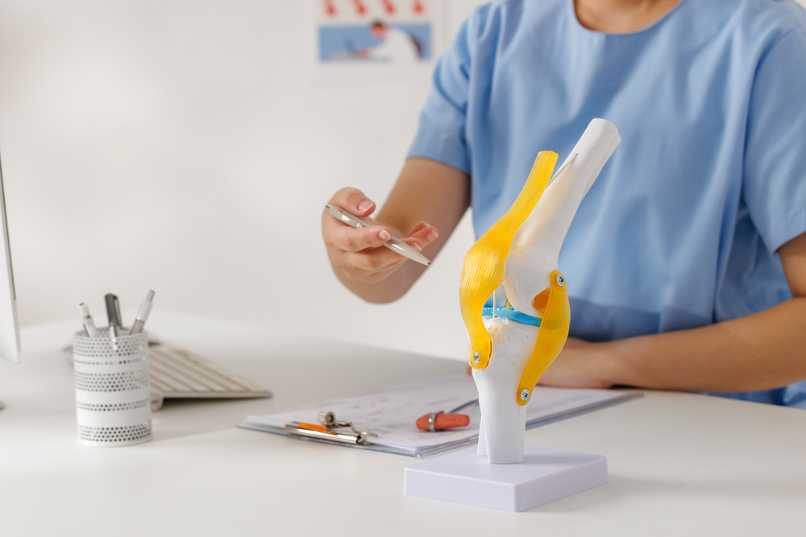

초기 보호·관리
부하를 줄이고 상태에 따라 약물·보조기로 통증을 관리합니다.
회전과 착지, 충돌이 많은 운동 중에는 인대와 연골판 등
여러 조직이 함께 손상되어 통증과 불안정성이 생길 수 있습니다.

스포츠 무릎 손상은 인대와 연골판, 힘줄 등 여러 조직의 손상을 포함하는 넓은 개념입니다.
다친 상황과 붓기, 불안정한 느낌을 확인하고 동반 손상 여부에 맞춰 치료를 계획합니다.
손상 부위에 따라 통증과 붓기, 잠김, 불안정성이 나타납니다.
심한 통증이나 보행 어려움이 있다면 조기에 평가가 필요합니다.
급성기에는 무릎을 보호하고 통증을 조절하며
기능 회복 정도를 확인하면서 운동에 복귀합니다.

부하를 줄이고 상태에 따라 약물·보조기로 통증을 관리합니다.

근력과 균형, 동작 조절 능력을 회복해 단계적으로 운동에 복귀합니다.

인대·연골판 등 손상 정도에 따라 수술을 포함한 치료 방향을 정합니다.
소리와 함께 빠르게 붓거나 불안정해졌다면 인대·연골판 등의 손상을 확인해야 합니다. 운동을 중단하고 진료를 받는 것이 좋습니다.
체중을 싣기 어렵거나 무릎이 변형되고, 잠겨 움직이지 않거나 크게 붓는 경우에는 빠른 평가가 필요합니다. 손상 정도를 통증만으로 판단하지 마세요.
보호대가 회복 여부를 대신 판단해 주지는 않습니다. 진단과 재활 경과, 근력·안정성 및 종목 동작을 확인한 뒤 복귀해야 합니다.